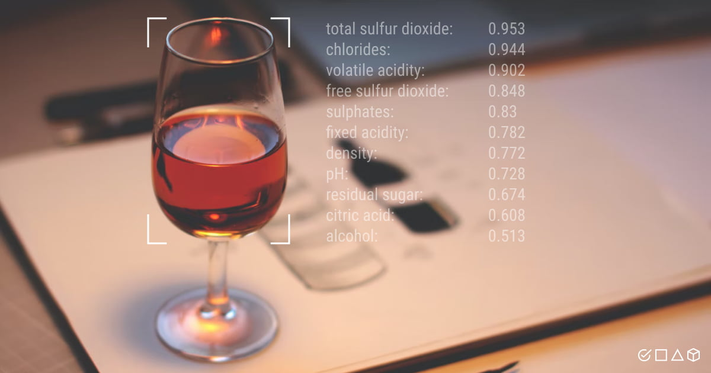

PowerBI dashboard for analysis of adventure works cycles dataset to track KPIs (sales, revenue profit, return), compare regional performance, analyze product-level trends and forecasts, and identify high-value custiomers.


Created a dashboard using R Shiny for analysis of College Major's dataset to identify the best and most popular majors, percentage of males and females in the different majors and the highest earning majors.
Used PySpark to perform data cleaning, analysis and machine learning on a huge airline dataset to find the best model to predict the delay status and time of different flights. Used Google Cloud clusters to run the PySpark scripts to get the results.

Analysis of a wine quality dataset using different statistical techniques such as regression, correlation, ANOVA, ANCOVA, proportion testing, and interaction testing. Built various linear models to predict quality of vine. Compiled the results in the form of a report using R Markdown.
This project focuses on performing data wrangling and building machine learning models to predict if a person is at risk of a heart attack. Performed feature engineering, feature selection, and hyperparameter tuning using 10 cross validation to build different machine learning models, and evaluated them to select the best model.

Implemented YOLOv3 object detection model in Tensorflow. Built a 75 layer fully convolutional network and made predictions at 3 different scales to accurately detect objects. The Pascal VOC dataset was used for training and testing the model.
Made entity relationship diagrams in Lucidchart to model a hospital database architecture. Implemented the model in SQL by creating tables, relationships, and performing normalization and indexing. Created procedures and triggers, and SQL scripts to query the database.